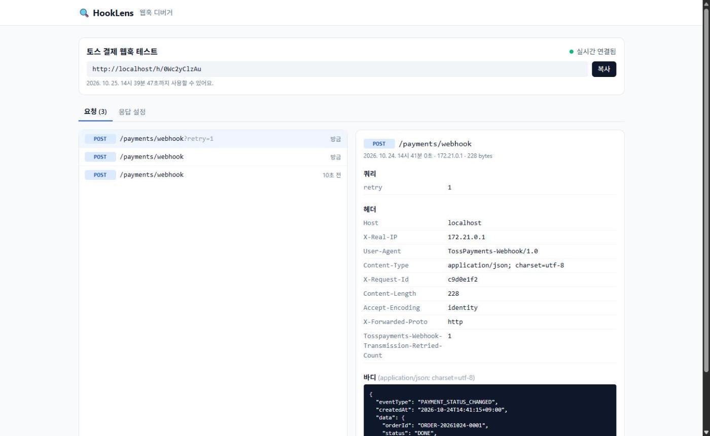
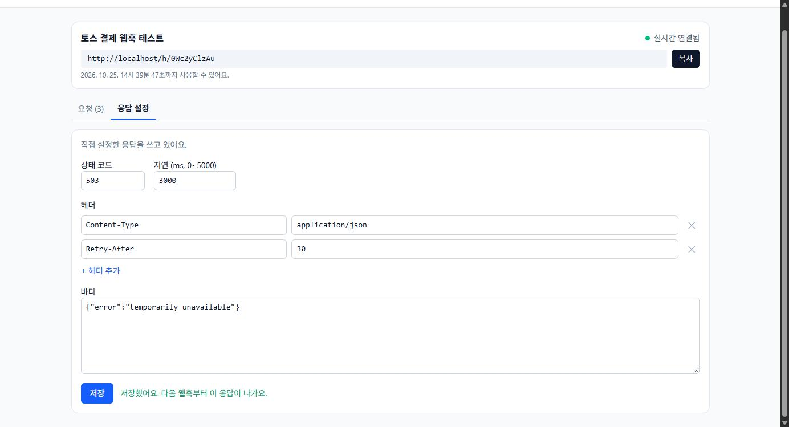

뭐가 오는지 모른다
결제사가 실제로 보내는 헤더와 바디를 문서만으로는 확신하기 어렵다.
들어온 요청을 가공하지 않고 메서드·경로·쿼리·헤더·바디·IP·시각까지 그대로 기록해서 보여준다.
결제사·깃허브 웹훅을 받아서 실시간으로 보여주고,
정해 둔 응답을 돌려주는 웹훅 디버거

결제사가 실제로 보내는 헤더와 바디를 문서만으로는 확신하기 어렵다.
들어온 요청을 가공하지 않고 메서드·경로·쿼리·헤더·바디·IP·시각까지 그대로 기록해서 보여준다.
결제사 서버는 인터넷에 있고, 개발 중인 localhost에는 웹훅을 보낼 수 없다.
버튼 한 번으로 인터넷에서 접근 가능한 주소를 발급한다. 가입 없이 24시간 동안 쓴다.
우리 서버가 실패하거나 느릴 때 결제사가 재전송하는지 미리 볼 방법이 없다.
응답 코드·헤더·바디·지연(0~5초)을 정해 두면 다음 웹훅부터 그대로 응답한다.
/h/{slug} 주소가 생긴다결제 웹훅 3건이 실시간으로 들어왔고, 재전송 요청의 헤더(...Retried-Count: 1)와 바디를 보고 있다.

503 + 3초 지연 + Retry-After로 바꾸면 다음 웹훅부터 이 응답이 나간다.
저장 후 이벤트만 발행한다. 서버를 늘려 Redis Pub/Sub로 바꿔도 수신 코드는 그대로다.
Nginx 하나가 화면과 API를 같은 주소로 제공해 CORS 설정이 없다. 백엔드·DB 포트는 열지 않는다.
관리 API는 {success, data, error}, 에러 코드는 enum 한 곳. 웹훅 수신만 사용자 설정대로 응답한다.
EventSource는 커스텀 헤더를 못 보낸다.fetch로 스트림을 직접 읽고 SSE를 파싱하는 훅. 끊기면 3초 뒤 재연결, 놓친 건 목록 API로 보충.@TransactionalEventListener(AFTER_COMMIT). 이벤트에는 엔티티 대신 DTO를 담아 트랜잭션 밖 LAZY 예외를 피함.tomcat-handler-N으로 적용 확인.request_id < cursor 커서 방식 + 같은 순서의 복합 인덱스. 다음 페이지는 COUNT 대신 size + 1개 조회로 판단.findByIdAndEndpointId로 조건을 쿼리에 넣어 남의 것은 조회조차 안 되게. 403 대신 404로 존재 여부도 숨김.MessageDigest.isEqual(타이밍 공격 방지).\r\n이 있으면 Set-Cookie 같은 헤더를 끼워 넣을 수 있다.Content-Length 같은 전송 헤더는 무시.HttpClient로 스트림에 붙어 이벤트 도착을 확인 (5초 제한)Clock 빈에서만 가져와 만료 경계(1초 전·정각·1초 후)를 고정해 검증proxy_buffering off, SPA 새로고침은 try_filesddl-auto: validate — 엔티티에서 만든 DDL을 MySQL 첫 실행 때 적용X-Forwarded-For + forward-headers-strategythreads를 thread로, forward를 forword로 쓴 적이 있다. Spring은 모르는 키를 조용히 무시해서 앱은 잘 뜨고 기능만 빠진다. 그 뒤로 설정을 바꾸면 스레드 이름, 저장된 IP처럼 실제 동작을 눈으로 확인한다.
기능마다 선택지를 비교하고 이유를 문서로 남긴 뒤 구현했다. 커서 페이징, AFTER_COMMIT, IDOR처럼 그냥 지나칠 뻔한 부분을 직접 고를 수 있었다.
범위를 잡을 때 프론트와 배포의 비중을 작게 봐서 EC2 배포까지는 마치지 못했다. 다음에는 배포 구성을 먼저 만들고 기능을 올리는 순서로 하려고 한다.